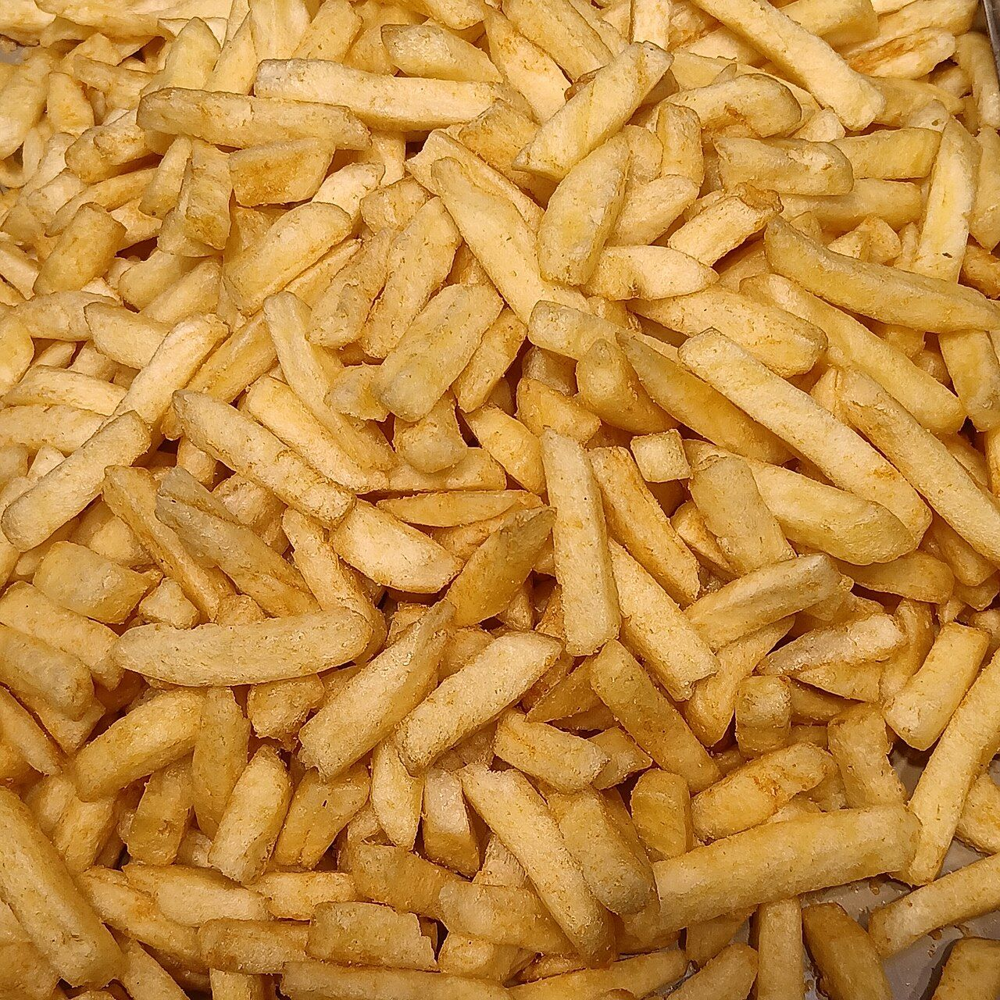
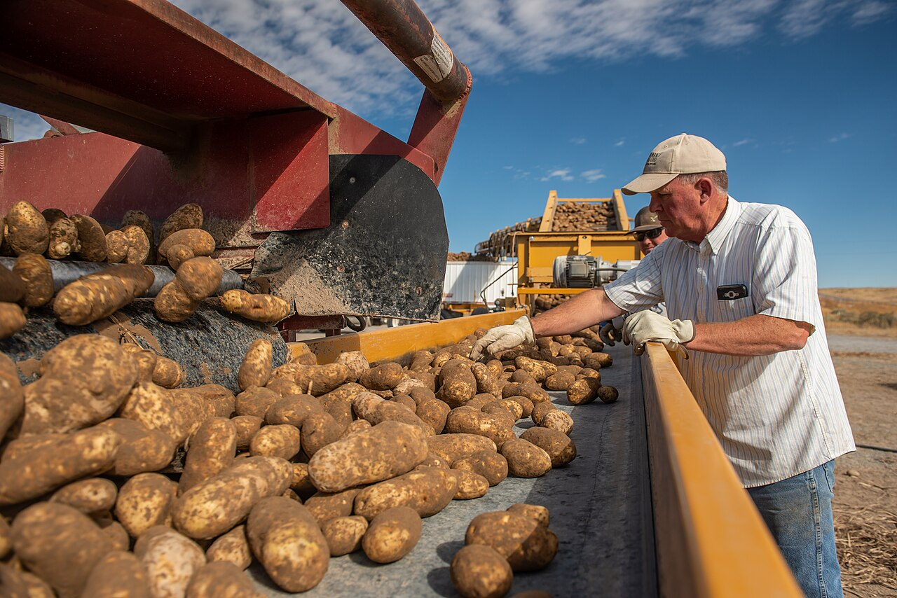
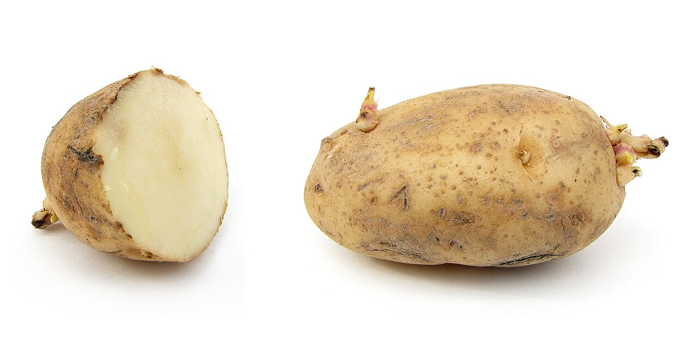
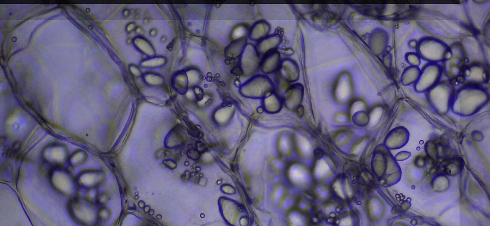
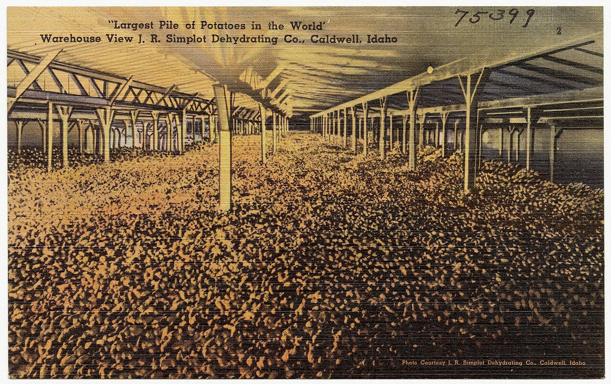
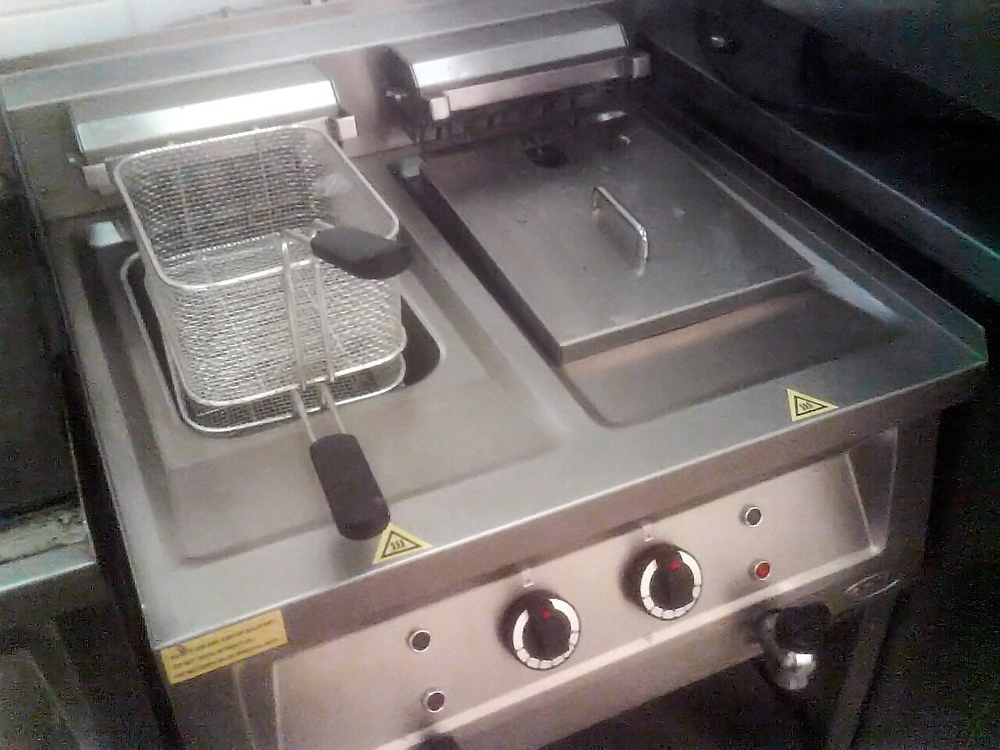
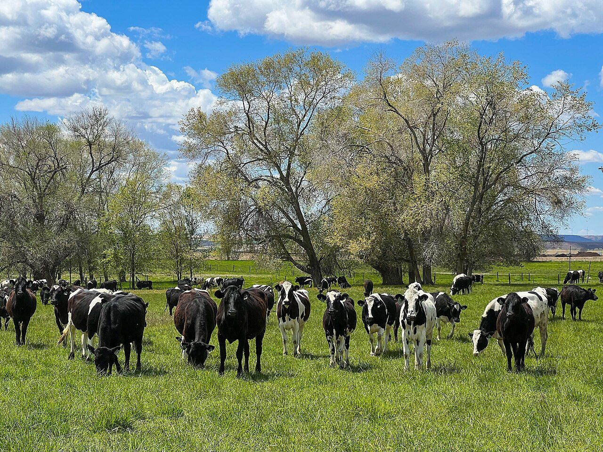
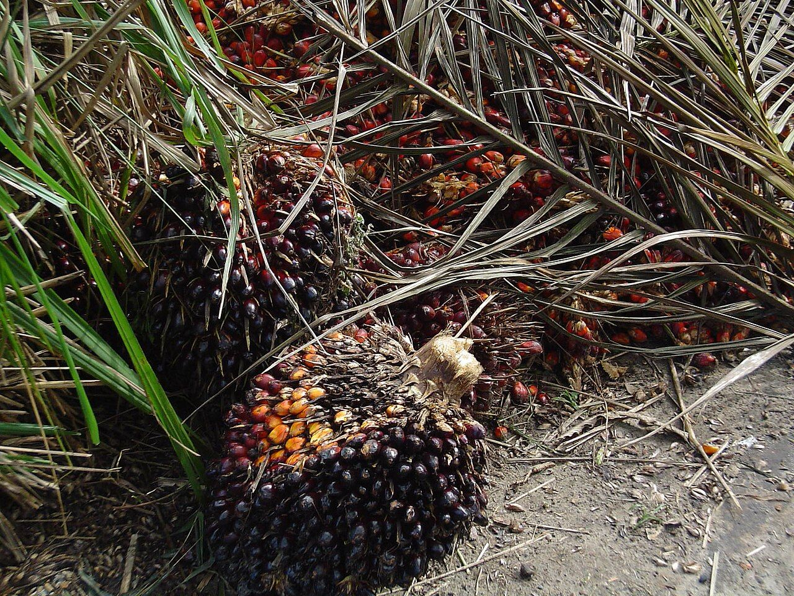

社会・経済 Society & Economyマクドナルドのポテトは、なぜあんなにおいしい？
外はカリッと、中はほくっと。その食感は、店の油に入る前から準備されています。畑から店までの流れ図、保存の温度と糖の関係の模式図、70年あまりの年表でたどります。おいしさは、どこで決まるのでしょう？
2026.11.01 UP 約5分で読める 文：SOMOSOMO編集部
イメージ：French fries／Fumikas Sagisavas（2024年、CC0）
アメリカ・イリノイ州のデスプレーンズ、1955年4月。レイ・クロックが、マクドナルドの店を開きました。カリフォルニア州でマクドナルド兄弟が営む店の手順をそのまままねてポテトを揚げたのに、本家と同じポテトにはならなかったと伝えられています。
それから70年。日本の店でも、細長いポテトがいつも同じ形と色で出てきます。あの食感は、揚げ方だけで生まれるのでしょうか。答えをさかのぼると、店の油より前、畑と貯蔵庫にたどり着きます。
In a word
でんぷんが多く水分の少ない品種 を選び、保存の温度 で糖を減らしておく。そのじゃがいもを工場で下揚げして冷凍 し、店で揚げ直す。おいしさの多くは、店に届く前に決まっています。仕上げは、牛の脂を混ぜた油と、決められた塩と時間です。
01
The Right Potato
カリッとほくっとは、じゃがいもの品種で決まる
じゃがいもの中身は、ほとんどが水とでんぷんです。でんぷんは、植物が栄養としてためこむ粉のような物質。揚げると表面の水分が飛んでカリッとし、中のでんぷんは熱でやわらかくふくらみます。水分の多いじゃがいもは、べちゃっと仕上がりやすくなります。
クロックは1950年代、仕入れ先に、じゃがいもの固形分（水分を除いた中身の割合）を20〜23%にそろえるよう求めました。水っぽいじゃがいもを、仕入れの段階ではじくしくみです。

ポテトになる前の、アイダホのじゃがいも アメリカ・アイダホ州デクロの畑で、収穫したじゃがいもを選り分ける作業（2018年10月。写真はイメージです）。茶色い皮の、細長くて大きないもが並んでいます。写真：Potato harvest and sorting near Yale Rd ／Kirsten Strough, USDA（2018年、パブリックドメイン）
アメリカで、フライドポテト向けの代表とされる品種が「ラセット・バーバンク」です。1873年に育種家のルーサー・バーバンクが選んだじゃがいもから生まれ、皮が赤茶色でざらざら（ラセット）しています。大きく細長いので長いポテトが切れ、果肉は乾いてほくほくしています。
日本マクドナルドも2014年に、「ラセットバーバンク種などの品種を厳選」していると説明しています。日本の店のじゃがいもは、アメリカのワシントン州やオレゴン州、カナダのアルバータ州などの農場で作られ、加工もアメリカとカナダで行われています。


中身の主役は、でんぷんの粒 左は、ラセット系のじゃがいもを半分に切ったもの。右は、顕微鏡で見たじゃがいもの組織で、細胞の中の丸い粒が、でんぷんをためる小さな袋（アミロプラスト）です。写真：Russet potato cultivar with sprouts ／ZooFari（2009年、パブリックドメイン）、Potato storage tissue containing amyloplasts ／Krishna satya 333（2020年、CC0）
02
Sweetened by Cold
じゃがいもは、冷やすと甘くなる
じゃがいもは、掘り出したあとも生きています。冷蔵庫ほどの低い温度に置くと、たくわえたでんぷんの一部が糖に変わり、糖が増えていきます。農林水産省も、冷蔵庫で長く保存したじゃがいもは糖分が増えている、と注意を呼びかけています。
糖が多いと、揚げたときに困ります。糖は、アミノ酸（たんぱく質のもとになる物質）と熱で結びつき、茶色い色と香ばしい香りを生みます。1912年にフランスの化学者メヤールが報告したので、メイラード反応と呼ばれます。
この反応は、およそ140〜165℃で速く進みます。糖が多すぎると、中まで火が通る前に外が茶色く焦げ、色むらも出やすくなります。農林水産省の調理の実験でも、冷蔵したじゃがいもは焦げやすくなりました。
Fig.01 保存の温度と、じゃがいもの糖
多い
少ない
糖
0
5
10
15
20
保存の温度（℃）
冷蔵庫
8℃前後
冷やすと、糖がふえる
温度を上げると、減る
糖が多い→外が焦げる
糖が少ない→色が均一
見どころは、色のついた帯（冷蔵庫ほどの温度）で赤い線が高いところ。冷やすほど糖が増え、揚げると外が先に焦げます。糖の量は目盛りのない模式図です。8℃前後は、食品工場向けの国の指針が挙げる貯蔵の目安です。
逆に、冷やしたじゃがいもも、室温に1週間ほど置くと糖が減ります。食品工場向けの国の指針は、糖が増えるのを抑えるため、貯蔵庫の中を8℃前後に保つことを挙げています。
クロックも、ここでつまずきました。じゃがいもの業界の専門家に相談し、じゃがいもは掘ったあと乾くにつれて味がよくなると知ります。そこで店の地下にじゃがいもを置き、大きな扇風機で風を当ててねかせるしくみを作った、と自伝に書いています。
いまの日本マクドナルドも、収穫したじゃがいもを土の中に似た環境で保管し、温度と湿度を管理して空気を循環させている、と説明しています。掘ってから切るまでの保存も、ポテトづくりの一部なのです。

「世界一大きなじゃがいもの山」 アイダホ州コールドウェルにあった、J.R.シンプロット社の倉庫の絵はがき（1930〜1945年ごろ）。屋根の下の床一面に、じゃがいもが積まれています。この会社が、のちにマクドナルドに冷凍ポテトを納めることになります。写真："Largest pile of potatoes in the world," warehouse view J.R. Simplot Dehydrating Co. ／Tichnor Brothers（1930〜1945年ごろ、パブリックドメイン）
03
Fried Twice
ポテトは、海の向こうの工場で一度揚げてある
店のポテトは、生のじゃがいもを店で切って揚げたものではありません。工場で洗って皮をむき、高速の水流でカッターに押し出して細長く切ります。さっとゆでて（ブランチング）から軽く揚げ（下揚げ）、凍らせて店へ送ります。
日本マクドナルドは、この下揚げが、外はカリッと中はほくほくの食感をつくると説明しています。家庭向けにも、約140℃で2〜3分揚げてから170℃で揚げ直す二度揚げを、農林水産省が紹介しています。
アメリカのマクドナルドが工場の様子を見せた2015年の動画では、切ったじゃがいもを、ぶどう糖をふくむ液にひたしていました。揚げ色を均一にするためです。保存で糖を減らしたうえで、決まった量を足して色をそろえていると考えられます。
Fig.02 じゃがいもが、日本の店に届くまで
FARM 北米の畑で育てる 3〜5月に種いもを植え、収穫は4か月ほど続く STORAGE 貯蔵庫でねかせる 温度と湿度を管理し、空気を循環させる FACTORY 工場で下揚げする 水流で押し出して切り、さっとゆでてから軽く揚げる FROZEN 凍らせて海をわたる 店に着くまで、ずっと冷凍のまま SHOP 店で揚げて、塩をふる 決められた温度と時間で揚げ、決まった量の塩をふる
見どころは、FACTORY と SHOP の2か所。ポテトは工場と店で2回、油をくぐります。日本マクドナルドの説明をもとに作った図です。
下揚げしてから凍らせる方法は、1962年に特許が取られました。1967年にはクロックが、アイダホのJ.R.シンプロットと握手だけで冷凍ポテトの取引を決めたといわれます。冷凍なら季節を問わず同じじゃがいもが使え、1972年にはアメリカの全店のポテトが冷凍になりました。
店では、決められた温度と時間で揚げ、専用の器具で決まった量の塩をふります。塩の成分はふつうの塩と同じで、ポテトに合う粒の大きさを選んでいるそうです。揚げたあと置いておける時間にも、厳しい決まりがあります。

最後の数分は、店のフライヤーで 業務用のフライヤー（写真はイメージです）。左の槽には網のかごが入り、右の槽はふたが閉じています。工場の下揚げに続いて、ここでもう一度油をくぐります。写真：Deepfryer ／Kristofer2（2007年、パブリックドメイン）
冷凍のまま海をわたるので、港が止まると影響が出ます。2014年12月、アメリカ西海岸の港で労使の交渉が長引くと、日本マクドナルドは航空便でもポテトを運び、12月17日から翌年1月4日まで、ポテトの販売をSサイズだけにしました。
2021年12月にも、船の経由地であるカナダ・バンクーバー港の近くで大きな水害が起き、コロナ禍の物流の混乱も重なって、24日から30日までSサイズだけになりました。2022年1月9日からも、約1か月の予定で同じ制限が行われています。
04
Beef in the Oil
揚げ油には、牛の脂が入っている
1949年に兄弟の店がポテトを売り始めたころ、揚げ油は牛脂（牛の脂）が約93%、綿実油（綿の種からとる油）が約7%でした。クロックの店も、長くこの牛脂の多い油でポテトを揚げていました。
1980年代の終わり、健康への心配から、牛脂をやめるよう求める新聞広告が出ます。1990年7月、アメリカのマクドナルドは揚げ油を植物油に切りかえました。そのかわりに加えたのが、牛の風味をつける香料です。
この香料が、のちに問題になります。2001年、肉を食べないベジタリアンやヒンドゥー教徒の人たちが、牛由来の成分を知らされていなかったとして訴えました。マクドナルドは2002年に謝罪し、関係する団体などに1,000万ドルを支払って和解しています。


牛の脂と、ヤシの実の油 左は、アイダホ州ウェンデルの牧草地の牛（2022年）。右は、アブラヤシの実の房で、パーム油はこの実からとれます。日本の店の揚げ油は、この2つの油を混ぜたものです（写真はイメージです）。写真：Cattle graze in a small pasture near Wendell, Idaho ／Kirsten Strough, USDA（2022年、パブリックドメイン）、Fruit oil palm ／Tornasole（撮影年不明、パブリックドメイン）
日本の店の揚げ油は、いまも牛脂とパーム油（アブラヤシの実の油）を混ぜたものです。日本マクドナルドは、商品の風味をよくするためと説明しています。2013年からは、健康への影響が指摘されるトランス脂肪酸を減らした油を使っています。
いっぽうアメリカの原材料表示には、植物油とあわせて「天然の牛の香料（小麦と牛乳由来の成分を含む）」と書かれています。同じ名前のポテトでも、国によって揚げ油の中身はちがうのです。
Fig.03 マクドナルドのポテトの70年あまり
1
2
3
4
5
6
7
8
1950
1970
1990
2010
1 1949 兄弟の店でポテトを売り始める2 1955 クロックが1号店を開く3 1962 下揚げしてから冷凍する方法の特許4 1967 シンプロットと冷凍ポテトの取引5 1971 日本の1号店が東京・銀座に7 2014 日本で「Sサイズだけ」に（港の混乱）8 2021 ふたたび「Sサイズだけ」に（水害など）
6 1990 アメリカで揚げ油を植物油に
見どころは、赤い6の1990年。それまでの40年あまり、ポテトは牛脂の多い油で揚げられていました。横の長さは年数に比例。英語版 Wikipedia、日本マクドナルドの発表などをもとに作った図です。
05
By the Numbers
数字で見る、ポテト
101km 工場で、じゃがいもをカッターへ押し出す水流の速さ（時速）。高速道路を走る車ほどの速さで、丸ごと一気に切る日本マクドナルド「よくあるご質問」
7分 揚げ始めてから、店で出してよいとされる時間。過ぎたものは捨てられるというBusiness Insider Japan の取材記事、2023年
40%超 アメリカのじゃがいも畑のうち、ラセット・バーバンクが占める面積の割合。1930年には約4%だった英語版 Wikipedia（2010年代の数字）
Here's the Fun Part
ここが面白い！
では、なぜカリフォルニア州サンバーナーディーノの兄弟の店では、最初からあのポテトができたのでしょう。クロックは自伝で、その答えを明かしています。
兄弟の店では、じゃがいもをふたのない置き場に入れて、外に置いていました。そこを乾いた砂漠の風が吹き抜け、じゃがいもは知らないうちに、ちょうどよくねかされていた。兄弟はそれと気づかずに、自然の力でじゃがいもを仕上げていた、とクロックは書いています。
デスプレーンズの地下室の扇風機は、この砂漠の風を人の手でまねる試みでした。冒頭の「本家と同じにならない」なぞの答えは、揚げ方ではなく、店の裏の置き場にあったのです。
家でフライドポテトを作るなら、じゃがいもを冷蔵庫に入れず、暗くて涼しい場所に置いてみてください。次にポテトを食べるときは、その1本が、畑と風と冷凍庫をくぐってきたことを思い出してみてください。
出典・参考
Ray Kroc, Robert Anderson "Grinding It Out: The Making of McDonald's"（1977年。邦訳『成功はゴミ箱の中に』プレジデント社、2007年）：兄弟の店のふたのない置き場と砂漠の風、乾くにつれて味がよくなるという説明、地下室の扇風機で風を当ててねかせるしくみ（該当箇所の抜粋 ）
McDonald's french fries （英語版 Wikipedia）：1949年の導入と牛脂約93%・綿実油約7%の揚げ油、1950年代の固形分20〜23%の基準とねかせる工程、1962年の下揚げ冷凍の特許（トレイスマンら）、1967年のシンプロットとの握手での取引、1980年代末の新聞広告、1990年の植物油と牛の風味の香料への切りかえ、2002年の1,000万ドルの和解、工場での下揚げと冷凍J. R. Simplot （英語版 Wikipedia）：1967年の握手での合意、冷凍で一年中同じじゃがいもが使えたこと、1972年までに全店のポテトが冷凍にRusset Burbank （英語版 Wikipedia）：1873年にルーサー・バーバンクが選んだ品種から生まれたこと、大きく細長く果肉が乾いてほくほくしていること、1930年の約4%と2010年代の作付面積の40%超Maillard reaction （英語版 Wikipedia）：還元糖とアミノ酸の反応、約140〜165℃で速く進むこと、1912年のメヤールの報告、フライドポテトの色づき低温で保存したじゃがいもの糖の増加（cold-induced sweetening）に関する研究 （Frontiers in Plant Science、2018年）：低温で保存すると還元糖が増え、揚げ色が濃くなることフライドポテトを家庭で作るときのアドバイス （農林水産省）：冷蔵庫で長く保存したじゃがいもは糖分が増えていること、室温に1週間ほど置くと減ること、約140℃で2〜3分のあと170℃で揚げる二度揚げ家庭調理でできること （農林水産省）：冷蔵したじゃがいもを炒めると焦げやすくなったこと食品中のアクリルアミドを低減するための指針 第1版 （農林水産省、2013年11月）：ばれいしょの低温糖化を抑えるため、貯蔵施設内を8℃前後にすることよくあるご質問：サイド （日本マクドナルド）：じゃがいもの原産地と製造所はアメリカ・カナダ（ワシントン州・オレゴン州、アルバータ州など）、3〜5月の植えつけ、時速101kmの水流でのカット、工場でのプレフライと店での揚げ直し、冷凍での納品、塩の量・専用器具・粒の大きさ、保管時間の規定、牛脂とパーム油のブレンド油よくあるご質問：揚げ油 （日本マクドナルド）：風味をよくするための牛脂とパーム油のブレンド、2013年の低減フライオイルの導入おいしさを支える世界地図「ビッグマップ」ポテト篇 （日本マクドナルド）：土の中に似た環境での保管と温度・湿度・空気の管理、ブランチングと下揚げ、収穫期が4か月ほどマックフライポテトの期間限定価格のニュースリリース （日本マクドナルド、2014年7月22日）：「ラセットバーバンク種などの品種を厳選」マクドナルドのポテトの製造工程を紹介した記事 （GIGAZINE、2015年1月26日）：アメリカのマクドナルドの動画で紹介された工場の工程、ぶどう糖をふくむ液にひたして揚げ色を均一にすること日本マクドナルドのポテトのSサイズ限定を伝える記事 （LOGISTICS TODAY、2014年12月16日）：米西海岸の港の労使交渉、1,000トン超の航空便での緊急輸入、12月17日からのSサイズ限定。終了日はCNN.co.jp （2015年1月5日から全サイズ再開）日本マクドナルドのポテトのSサイズ限定を伝える記事 （グルメ Watch、2021年12月21日）：バンクーバー港近くの水害とコロナ禍の物流、12月24〜30日のSサイズ限定。2022年1月9日からの約1か月の休止は文春オンライン （2022年1月30日）マクドナルドの和解を伝える記事 （CNN Money、2002年6月5日）：ヒンドゥー教徒やベジタリアンの団体などへの1,000万ドルの支払いと謝罪マックのポテトの寿命は7分 （Business Insider Japan、2023年9月25日）：揚げ始めてから7分以内のものを出すことアメリカの原材料表示（"Natural Beef Flavor [Wheat and Milk Derivatives]"）は、LIVESTRONG.COM の記事 に引かれた米マクドナルドの表示による
写真：すべて CC0 またはパブリックドメイン。クレジットはそれぞれの写真の下に記しています。扉：French fries ／Fumikas Sagisavas（2024年、CC0）